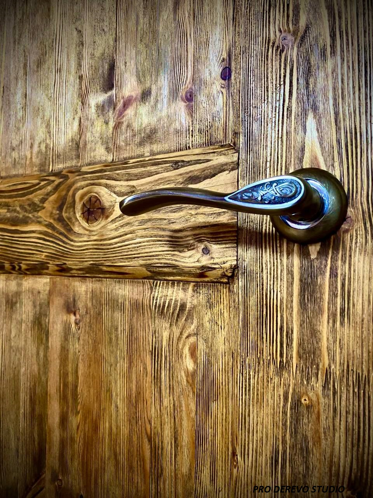
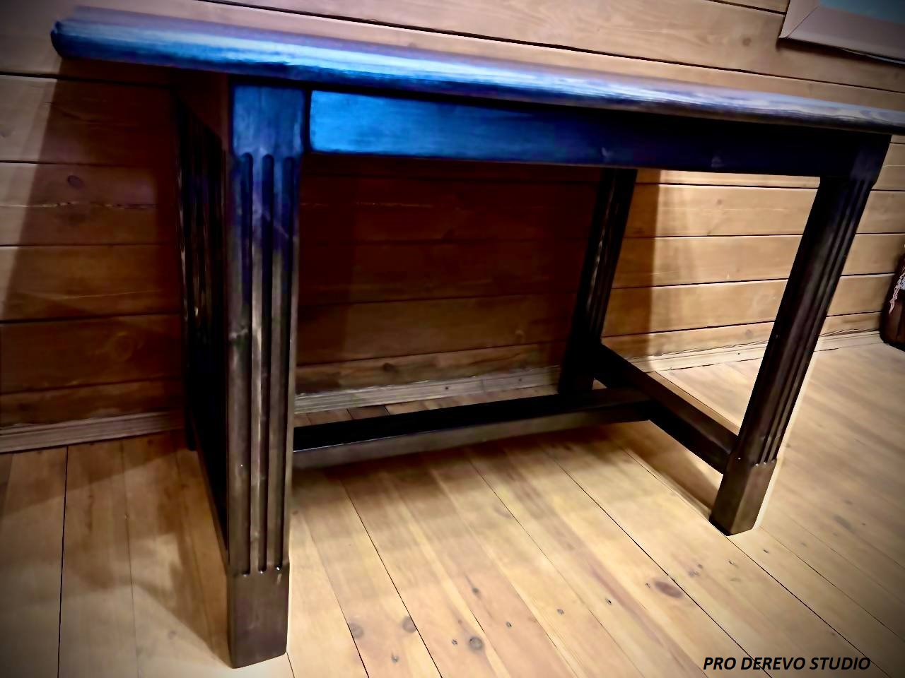

браширование
Дерево с историей – благородство времени в каждой текстуре
Браширование – это искусство состаривания дерева, которое раскрывает его скрытую красоту. С помощью специальной обработки мы аккуратно удаляем мягкие волокна, оставляя только твёрдую, выразительную структуру. В результате – глубокий рельеф, натуральные прожилки и эффект благородного старения, который придаёт интерьеру аутентичность и шарм.
Почему выбирают наше браширование?
✔ Ручная работа – никаких шаблонов, только индивидуальный подход.
✔ Экологичные материалы – сохраняем естественную фактуру без химии.
✔ Уникальный результат – каждое изделие неповторимо, как отпечаток времени.
Где применимо?
Двери (как эта на фото – с выразительной текстурой и благородным оттенком)
Мебель (столы, комоды, шкафы – дух старины в современном интерьере)
Декор (полки, рамы, панели – детали, которые говорят сами за себя)
Хотите, чтобы дерево в вашем доме рассказывало историю?
Доверьте это нам – создадим вещь, которая будет восхищать годами.
Эксклюзивная мебель с характером – для тех, кто ценит индивидуальность
Этот стол с массивными ножками в стиле «римские колонны» – пример того, как ручная работа превращает дерево в произведение мебельного искусства. Он был создан по индивидуальному заказу для ресторана – чтобы подчеркнуть аутентичность атмосферы и стать изюминкой интерьера.
Почему клиенты выбирают наши столы?
✔ Авторский дизайн – каждая деталь продумана до мелочей.
✔ Надёжность – только массивная древесина и прочная сборка.
✔ Эстетика ручной работы – никакого холодного ширпотреба, только тёплое, живое дерево.
Сколько стоит такой стол?
Цена индивидуальна и зависит от размера, породы дерева и сложности декора. Но мы всегда находим баланс между качеством и бюджетом – потому что красивая мебель должна быть доступна тем, кто её ценит.
Хотите такой же – или мечтаете о своём, уникальном проекте?
Давайте обсудим – создадим стол, который станет сердцем вашего пространства.